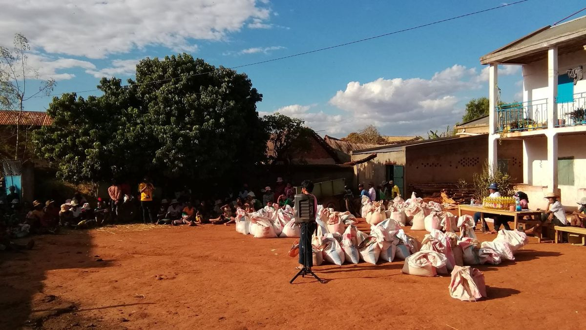
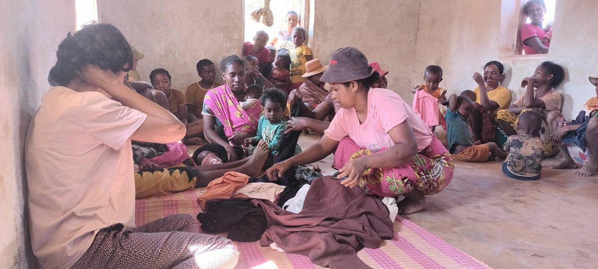
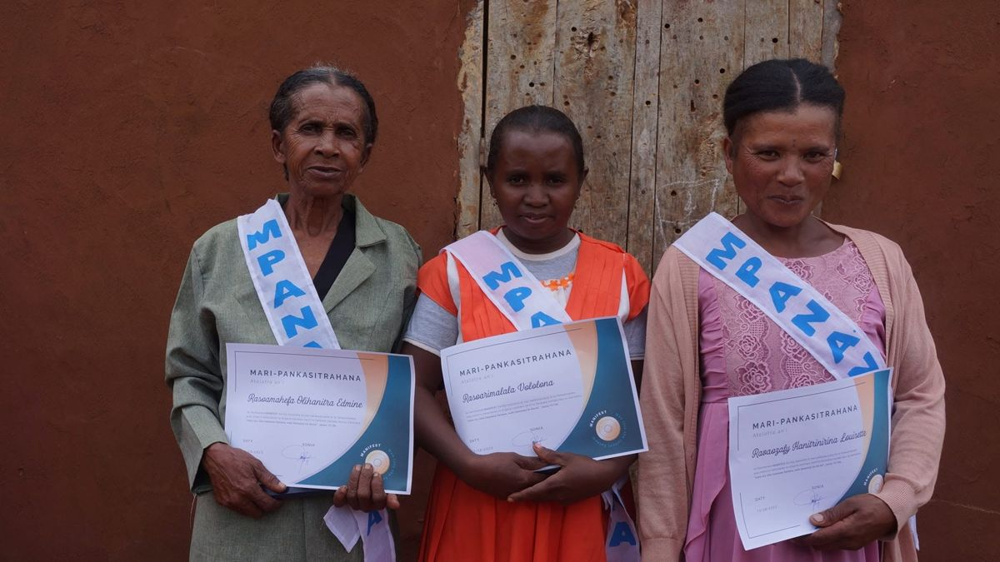
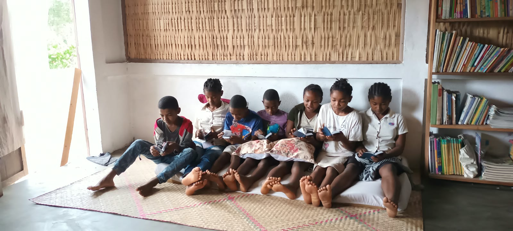
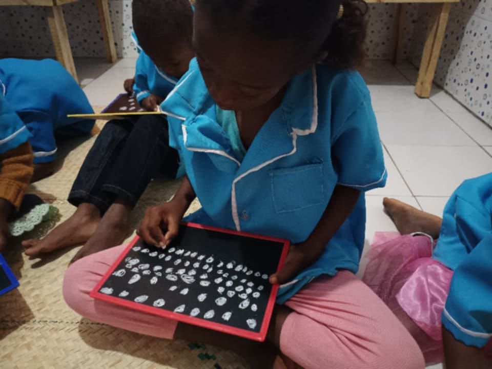
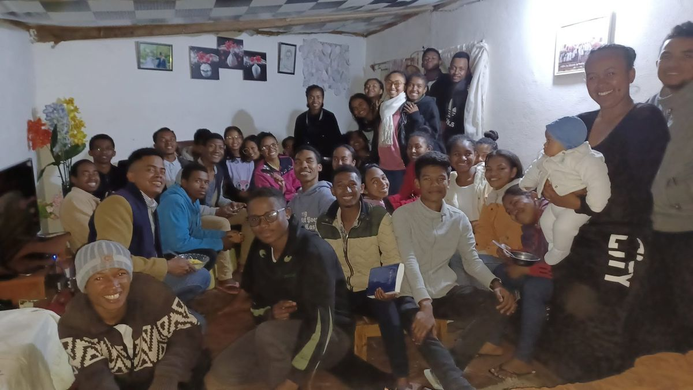
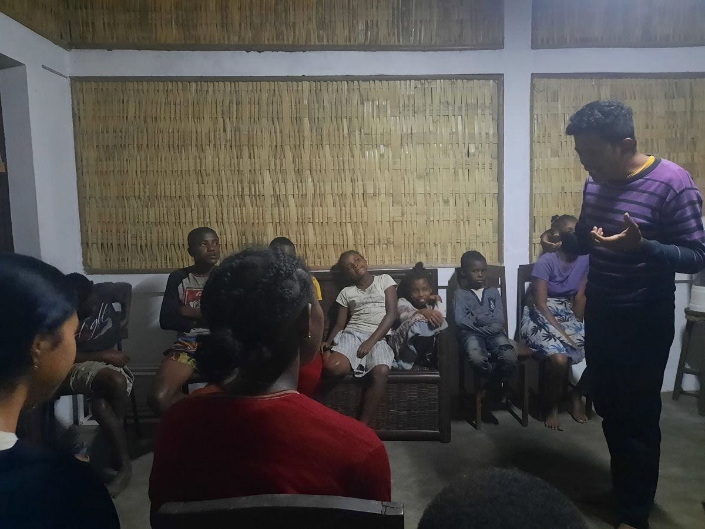
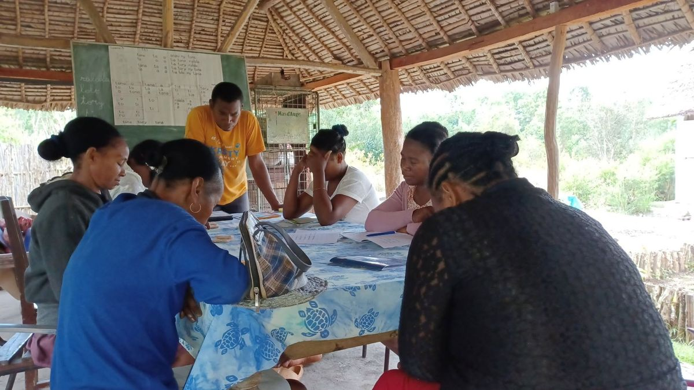
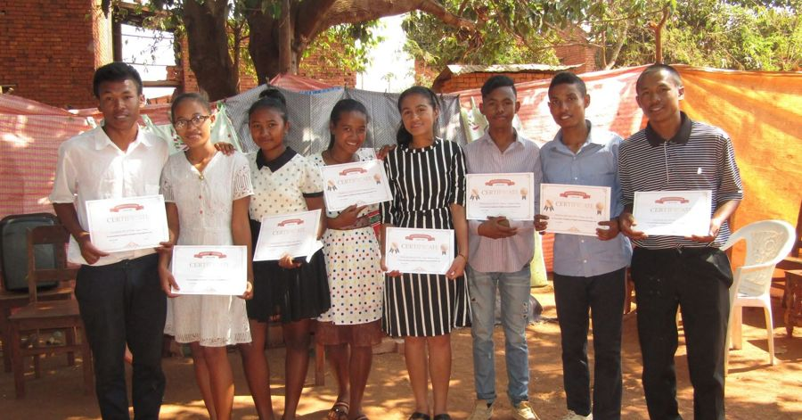
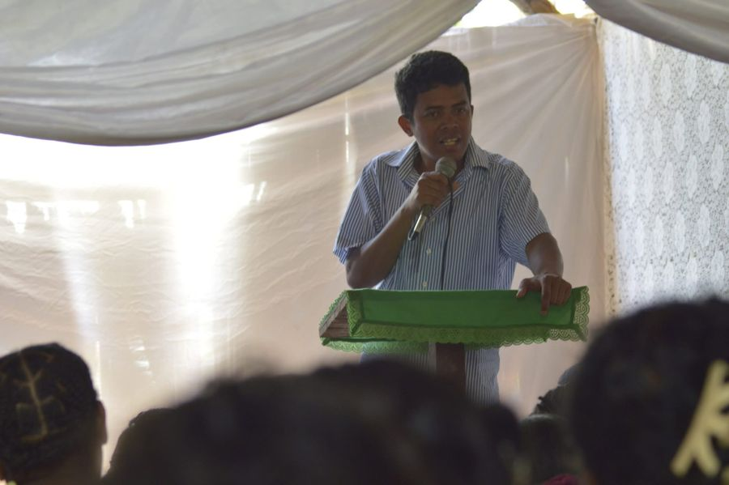

A person created in God’s image.
Our name · Our identity
What does
MANIFEST mean?
Our name describes a journey: people discovering their God-given identity, growing into purpose and living with dignity.
“I have come that they may have life, and have it abundantly.” John 10:10A journey of becoming.
Growing toward the fullness of God’s purpose.
Knowing our God-given value and dignity.
People becoming who God created them to be through the transforming power of the Gospel.
Transforming lives.
Vision
To see marginalised Malagasy children, youth, and families transformed by the Gospel of Jesus Christ. We envision them growing into influential leaders who know God, live abundant lives, and serve as channels of blessing to transform their communities and nation for God's glory.
Mission
To holistically educate, equip, and empower Malagasy children, youth, and families—starting in Bongolava, Analanjirofo, Analamanga (Antananarivo), and Tulear. We share the Gospel and provide the early foundation, practical skills, and spiritual training they need to grow in Christ, steward their potential, live with dignity, and become catalysts for a brighter future.


THE REALITY
Every community carries challenges:
- Limited opportunities.
- Interrupted education.
- Unemployment and economic hardship.
- Young people searching for direction
- Families carrying heavy burdens.
But behind every challenge is a person:
- A person with dignity.
- A person with potential.
- A person loved by God.

INVESTING IN PEOPLE
We serve people at different stages of life:
- CHILDREN: Growing in faith, learning and confidence.
- YOUTH: Discovering identity, purpose and direction.
- FAMILIES: Growing in faith, responsibility and resilience.
- PEOPLE IN NEED: Finding dignity, hope and opportunities.
Every person matters. Every life has potential.

Our dream
We dream of seeing transformed people become channels of transformation
- A young person who leads.
- A family that strengthens others.
- A skilled person who creates opportunities.
- A servant of God who is renewed and equipped.
- A community that becomes a blessing to others.
Transformation received. Transformation multiplied.
FROM VISION TO ACTION
- The Gospel is the foundation.
- Transformation is the goal.
- Equipping people is the pathway.
FAITH
CHARACTER
KNOWLEDGE
SKILLS
RESPONSIBILITY
IMPACT
Personal
Family
Community
Nation
From transformed lives to transformed communities.
Our calling in Scripture
The vision rests on three promises we hold to:

that we will go to different nations to bring the gospel of the Kingdom;

that we will bring life and hope to the needy and the poor;

and that through us then nations will be blessed and live in abundant life.
Four pillars
We serve people holistically and provide an educational and empowering environment in four areas.

Fostering Faith
Cultivating a hunger for God in children and youth, nurturing spiritual growth and teaching them to live according to His Word.

Discovering Purpose
Developing their awareness of their unique gifts, abilities and identity in Christ as they grow.

Equipping for Life
Providing practical education, skills and opportunities to grow up with dignity and responsibility.

Developing Leaders
Training them to act as Kingdom ambassadors who exercise their full potential to bring positive impact and transformation to their families and communities.
Ten core values
MANIFEST holds ten core values. Each is rooted in Scripture and chosen because of its direct relevance to the youth, the regions, and the challenges this project is addressing.
Honouring Others
(Isaiah 43:4; Genesis 1:26)
We chose this value because every young person we serve — however marginalised or overlooked by society — is treated as beloved and made in the image of God. This directly counters the shame and low self-worth that many Malagasy youth carry.
Spirit-Led & Obedient
(Acts 8:26; 1 John 2:17; John 8:28)
We chose this value because MANIFEST is first a spiritual work, not merely a social programme. "No word, no go" keeps our activities anchored in God's direction rather than our own agenda, and our sense of security in the centre of His will.
Depending on God (Kingdom-Oriented)
(Matthew 6:33; John 10:10)
We chose this value because our resources are limited and our need is great; seeking God's Kingdom first — including our well-being, provision, and daily prayer — keeps us dependent on Him rather than on circumstance.
Faithfulness
(Matthew 25:21)
We chose this value because trust is earned in small things before it is given in large ones. As stewards of what God and our partners entrust to us, we want to be found faithful in little so we can be entrusted with much.
Integrity
(John 3:21)
We chose this value because credibility with donors, government, churches, and the youth themselves depends on behaving the same in private as we do in public — especially around finances and promises made to vulnerable young people.
Trust
(Proverbs 3:5-6)
We chose this value because we cannot reach our goals alone. We trust God with what we cannot control, and we trust one another as a team so we can move toward the vision together instead of working in isolation.
Generosity
(Matthew 10:8)
We chose this value because MANIFEST exists to multiply blessing, not hoard it. Youth who receive training and support are taught, from day one, that being blessed means becoming a blessing to others.
Servanthood
(John 13:14; 15:13)
We chose this value because love, in our project, must be shown through action — mentoring, feeding, teaching, and standing with young people — and not only spoken about.
Excellence
(John 2:10; Genesis 1:31)
We chose this value because the youth we serve have often received the message that mediocrity is acceptable for them. We want every training, production, and event to reflect the excellence with which God does all things.
Networking & Partnership
(Genesis 1:26a)
We chose this value because God Himself works in relationship and community ("Let us make man..."), and no single ministry, however committed, can carry the whole task of transforming Bongolava, Analanjirofo, Analamanga (Antananarivo), Tulear, and the whole of Madagascar alone.

Tiana Albert
Tiana Albert is the founder of MANIFEST, the organisation that began the work now carried out in our classes, programmes and communities.
Our teachers and volunteers serve faithfully in different areas of our ministry and activities.
The beginning of MANIFEST
Photos from the starting and preparation of MANIFEST in Belobaka, including team devotions.


Work with us
Meet the people behind the programmes and find out how to join them.
See our programmes